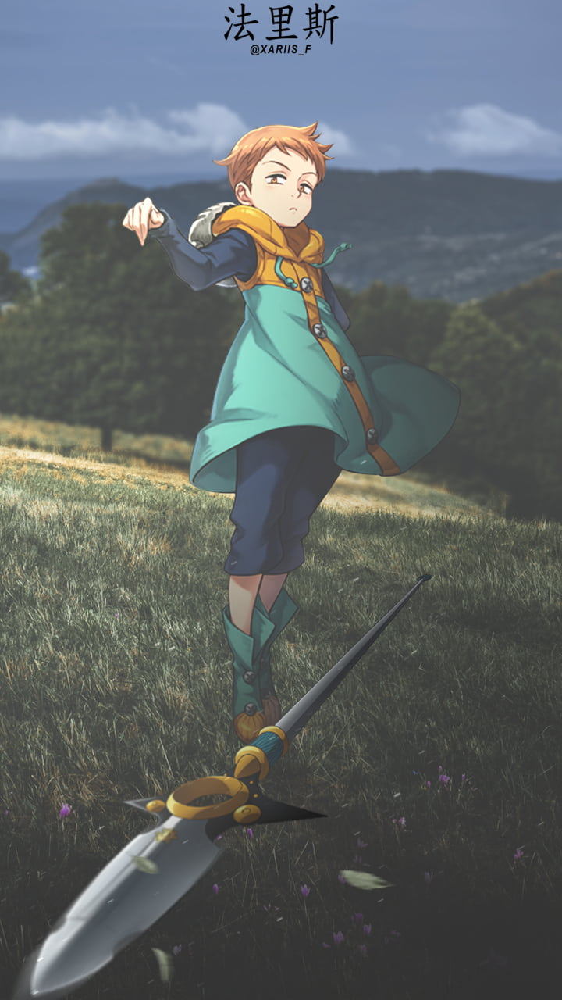

King
King, also known as the Grizzly's Sin of Sloth, is a prominent character in "The Seven Deadly Sins" series. King, whose real name is Fairy King Harlequin, is the king of the Fairy Forest. His primary ability is Disaster
King, also known as the Grizzly's Sin of Sloth, is a prominent character in "The Seven Deadly Sins" series. King, whose real name is Fairy King Harlequin, is the king of the Fairy Forest. His primary ability is Disaster